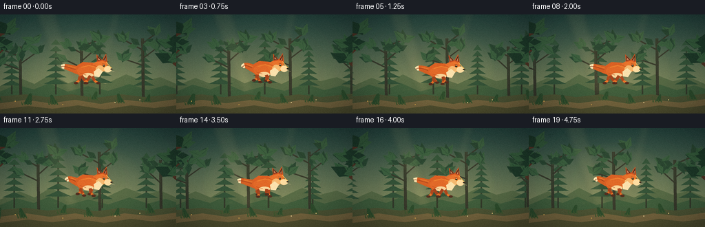
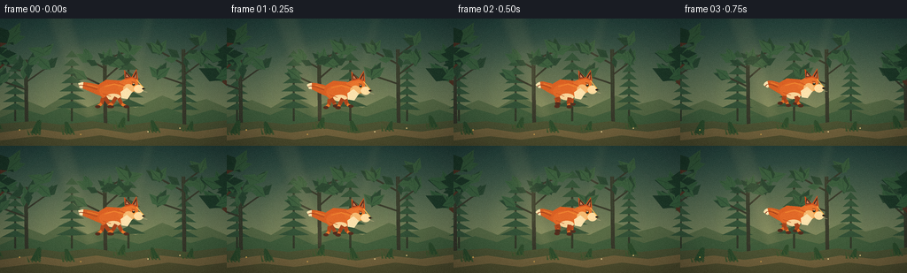
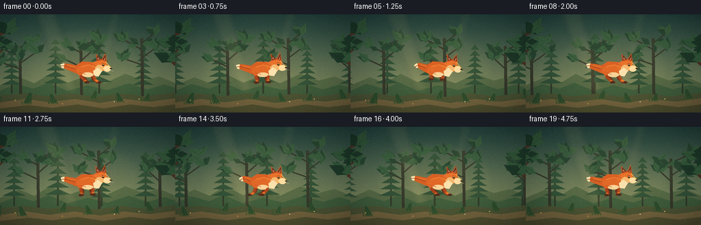
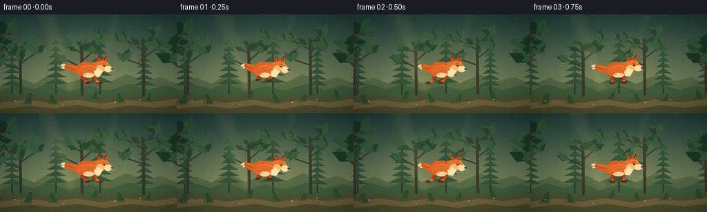

CODING AGENTS AS PIXEL WORLD MODELS
traex/DeepSeek-V4.1-Flash · instance_preservation_0014
点击播放 · 原生 RGB 像素
逐轮保存的候选
回放视频、检查图与代码变化。
每份候选均可单独播放。实际图片检查记录在下方工具轨迹中。
候选 01播放与检查图
点击播放 · 原生 RGB 像素


展开代码变化
--- 上一保存版本
+++ 本次保存版本
@@ -0,0 +1,451 @@
+"""Procedural side-view animation of an orange fox running through a forest."""
+
+from pathlib import Path
+import math
+import random
+
+import numpy as np
+from PIL import Image, ImageDraw, ImageFilter
+
+import artifact_io
+
+
+W, H = 256, 144
+SCALE = 4
+FPS = 4
+FRAMES = 20
+CASE_DIR = Path(__file__).resolve().parent
+
+
+def mix(a, b, amount):
+ return tuple(round(a[i] * (1 - amount) + b[i] * amount) for i in range(3))
+
+
+def bezier(points, steps=22):
+ """Sample a quadratic or cubic Bezier curve."""
+ out = []
+ for i in range(steps):
+ t = i / (steps - 1)
+ if len(points) == 3:
+ p0, p1, p2 = points
+ u = 1 - t
+ x = u * u * p0[0] + 2 * u * t * p1[0] + t * t * p2[0]
+ y = u * u * p0[1] + 2 * u * t * p1[1] + t * t * p2[1]
+ else:
+ p0, p1, p2, p3 = points
+ u = 1 - t
+ x = (u**3 * p0[0] + 3 * u * u * t * p1[0]
+ + 3 * u * t * t * p2[0] + t**3 * p3[0])
+ y = (u**3 * p0[1] + 3 * u * u * t * p1[1]
+ + 3 * u * t * t * p2[1] + t**3 * p3[1])
+ out.append((x, y))
+ return out
+
+
+def ribbon(points, widths):
+ """Return a polygon around a centerline with smoothly varying width."""
+ left, right = [], []
+ for i, point in enumerate(points):
+ before = points[max(0, i - 1)]
+ after = points[min(len(points) - 1, i + 1)]
+ dx, dy = after[0] - before[0], after[1] - before[1]
+ length = math.hypot(dx, dy) or 1
+ nx, ny = -dy / length, dx / length
+ width = widths[i] * 0.5
+ left.append((point[0] + nx * width, point[1] + ny * width))
+ right.append((point[0] - nx * width, point[1] - ny * width))
+ return left + right[::-1]
+
+
+def ellipse(draw, box, fill, outline=None, width=1):
+ draw.ellipse(tuple(round(v * SCALE) for v in box), fill=fill,
+ outline=outline, width=round(width * SCALE))
+
+
+def polygon(draw, points, fill, outline=None, width=1):
+ pts = [(round(x * SCALE), round(y * SCALE)) for x, y in points]
+ draw.polygon(pts, fill=fill, outline=outline, width=round(width * SCALE))
+
+
+def line(draw, points, fill, width=1, joint="curve"):
+ pts = [(round(x * SCALE), round(y * SCALE)) for x, y in points]
+ draw.line(pts, fill=fill, width=round(width * SCALE), joint=joint)
+
+
+def limb(draw, start, knee, paw, color, shade, thickness, paw_color):
+ line(draw, [start, knee], shade, thickness + 0.7)
+ line(draw, [knee, paw], color, thickness)
+ ellipse(draw, (paw[0] - thickness * 0.8, paw[1] - thickness * 0.45,
+ paw[0] + thickness * 0.9, paw[1] + thickness * 0.5),
+ paw_color)
+
+
+def draw_leaf(draw, x, y, size, angle, color):
+ ca, sa = math.cos(angle), math.sin(angle)
+ shape = [(-1.0, 0), (-0.2, -0.48), (0.8, 0), (-0.2, 0.48)]
+ pts = []
+ for px, py in shape:
+ pts.append((x + size * (px * ca - py * sa),
+ y + size * (px * sa + py * ca)))
+ polygon(draw, pts, color)
+ line(draw, [(x - size * 0.75 * ca, y - size * 0.75 * sa),
+ (x + size * 0.6 * ca, y + size * 0.6 * sa)],
+ mix(color, (20, 45, 33), 0.3), max(0.5, size * 0.06))
+
+
+def draw_fern(draw, x, y, scale, tint, flip=1):
+ stem = (22, 48, 34)
+ line(draw, [(x, y), (x + 5 * scale * flip, y - 17 * scale)], stem, 1.2 * scale)
+ for i in range(6):
+ u = 0.22 + i * 0.13
+ sx = x + 5 * scale * flip * u
+ sy = y - 17 * scale * u
+ length = (7.5 - i * 0.65) * scale
+ angle = -0.30 - i * 0.03
+ draw_leaf(draw, sx, sy, length, angle if flip > 0 else math.pi - angle, tint)
+ draw_leaf(draw, sx, sy, length * 0.85, math.pi + 0.45 if flip > 0 else -0.45, tint)
+
+
+def draw_pine(draw, x, base_y, height, color, trunk_color, seed):
+ rng = random.Random(seed)
+ trunk_w = max(1.6, height * 0.026)
+ line(draw, [(x, base_y), (x, base_y - height * 0.75)],
+ trunk_color, trunk_w)
+ for i in range(7):
+ yy = base_y - height * (0.18 + i * 0.105)
+ half = height * (0.19 - i * 0.019)
+ droop = rng.uniform(1.0, 3.0)
+ points = []
+ for side in (-1, 1):
+ points.extend([
+ (x + side * half, yy + droop),
+ (x + side * half * 0.57, yy - 3.5),
+ (x + side * half * 0.18, yy - 2.5),
+ ])
+ polygon(draw, [(x - half, yy + droop), (x, yy - height * 0.07),
+ (x + half, yy + droop), (x, yy + 1.8)], color)
+
+
+def draw_tree(draw, x, ground, height, seed, foreground=False):
+ rng = random.Random(seed)
+ trunk = (75, 48, 35) if foreground else (51, 55, 43)
+ dark = (27, 55, 40) if foreground else (39, 68, 49)
+ light = (48, 86, 57) if foreground else (55, 91, 61)
+ trunk_w = 7.5 if foreground else 4.2
+ top = ground - height
+ line(draw, [(x, ground), (x - 1, top + height * 0.16)],
+ trunk, trunk_w)
+ line(draw, [(x - trunk_w * 0.25, ground - height * 0.38),
+ (x - 1, top + height * 0.16)],
+ mix(trunk, light, 0.16), 1.8)
+ for branch in range(4):
+ y = top + height * (0.22 + branch * 0.105)
+ side = -1 if branch % 2 else 1
+ end = (x + side * rng.uniform(17, 30), y - rng.uniform(8, 18))
+ line(draw, [(x, y), end], trunk, trunk_w * (0.48 if not foreground else 0.6))
+ for k in range(5):
+ a = rng.uniform(-2.9, -0.2)
+ r = rng.uniform(8, 15) * (1.2 if foreground else 0.9)
+ cx = end[0] + math.cos(a) * r * 0.65
+ cy = end[1] + math.sin(a) * r * 0.55
+ draw_leaf(draw, cx, cy, r, a, dark if k % 2 else light)
+ for k in range(13 if foreground else 8):
+ a = rng.uniform(0, math.tau)
+ r = rng.uniform(7, 20) * (1.2 if foreground else 0.85)
+ cx = x + math.cos(a) * r
+ cy = top + height * 0.25 + math.sin(a) * r * 0.6
+ draw_leaf(draw, cx, cy, rng.uniform(6, 12),
+ a + rng.uniform(-0.6, 0.6), dark if k % 3 else light)
+
+
+def draw_background(t, frame_index):
+ layer = Image.new("RGB", (W * SCALE, H * SCALE))
+ draw = ImageDraw.Draw(layer)
+ # Pale dawn forest haze.
+ top = np.array([35, 67, 62], dtype=float)
+ bottom = np.array([157, 160, 105], dtype=float)
+ for y in range(H):
+ u = (y / (H - 1)) ** 1.25
+ color = tuple(np.round(top * (1 - u) + bottom * u).astype(int))
+ draw.rectangle((0, y * SCALE, W * SCALE, (y + 1) * SCALE), fill=color)
+
+ # A low, luminous clearing behind the animal.
+ glow = Image.new("RGBA", (W * SCALE, H * SCALE), (0, 0, 0, 0))
+ gd = ImageDraw.Draw(glow)
+ for i in range(8, 0, -1):
+ r = 21 + i * 8
+ alpha = int(7 + (9 - i) * 1.6)
+ gd.ellipse(((123 - r) * SCALE, (83 - r * 0.72) * SCALE,
+ (123 + r) * SCALE, (83 + r * 0.72) * SCALE),
+ fill=(234, 202, 126, alpha))
+ glow = glow.filter(ImageFilter.GaussianBlur(5 * SCALE))
+ layer = Image.alpha_composite(layer.convert("RGBA"), glow).convert("RGB")
+ draw = ImageDraw.Draw(layer)
+
+ # Distant ridgelines.
+ back = [(0, 104), (28, 92), (50, 101), (73, 87), (99, 100),
+ (124, 91), (153, 101), (183, 87), (209, 97), (233, 91),
+ (256, 101), (256, 144), (0, 144)]
+ polygon(draw, back, (82, 103, 69))
+ near = [(0, 112), (24, 102), (49, 109), (71, 100), (98, 112),
+ (128, 104), (157, 111), (188, 101), (215, 110), (240, 103),
+ (256, 108), (256, 144), (0, 144)]
+ polygon(draw, near, (60, 91, 60))
+
+ # Misty trunks form a quiet vertical rhythm.
+ far_shift = (t * 5.5) % 66
+ for i in range(-1, 6):
+ x = i * 64 - far_shift + 17
+ draw_pine(draw, x, 116, 82 + (i % 3) * 9,
+ (47, 79, 55), (47, 56, 42), 30 + i)
+
+ mid_shift = (t * 14.0) % 91
+ for i in range(-1, 5):
+ x = i * 89 - mid_shift + 30
+ draw_tree(draw, x, 123, 91 + (i % 3) * 7, 100 + i)
+
+ # Warm light shafts through the canopy.
+ rays = Image.new("RGBA", layer.size, (0, 0, 0, 0))
+ rd = ImageDraw.Draw(rays)
+ rd.polygon([(52 * SCALE, 0), (82 * SCALE, 0),
+ (114 * SCALE, 116 * SCALE), (97 * SCALE, 116 * SCALE)],
+ fill=(244, 210, 139, 18))
+ rd.polygon([(161 * SCALE, 0), (176 * SCALE, 0),
+ (146 * SCALE, 109 * SCALE), (137 * SCALE, 109 * SCALE)],
+ fill=(249, 220, 148, 12))
+ rays = rays.filter(ImageFilter.GaussianBlur(4 * SCALE))
+ layer = Image.alpha_composite(layer.convert("RGBA"), rays).convert("RGB")
+ draw = ImageDraw.Draw(layer)
+
+ # Forest floor with a winding path of warmer earth.
+ polygon(draw, [(0, 119), (37, 116), (69, 120), (104, 116),
+ (139, 121), (177, 116), (211, 120), (256, 115),
+ (256, 144), (0, 144)], (73, 82, 52))
+ polygon(draw, [(0, 129), (38, 124), (72, 129), (109, 124),
+ (146, 130), (181, 124), (219, 128), (256, 123),
+ (256, 144), (0, 144)], (112, 98, 62))
+ polygon(draw, [(0, 138), (41, 133), (76, 137), (113, 132),
+ (151, 138), (190, 132), (224, 136), (256, 132),
+ (256, 144), (0, 144)], (77, 78, 48))
+
+ # Scattered grass and small stones scroll with the near ground.
+ rng = random.Random(82)
+ grass_shift = (t * 31.0) % 74
+ for i in range(-2, 7):
+ x = i * 43 - grass_shift + rng.uniform(-8, 8)
+ y = 125 + rng.uniform(-2, 6)
+ draw_fern(draw, x, y, rng.uniform(0.55, 0.95),
+ (43, 76, 45), 1 if i % 2 else -1)
+ for j in range(4):
+ h = rng.uniform(4, 9)
+ polygon(draw, [(x - 8 + j * 4, y + 1),
+ (x - 9 + j * 4 + rng.uniform(-1, 1), y - h),
+ (x - 6 + j * 4, y + 1)],
+ (60, 85, 48))
+
+ # A few tiny warm wildflowers catch the light.
+ for x, y, color in [(22, 126, (223, 176, 86)), (203, 124, (219, 193, 126)),
+ (91, 131, (198, 155, 78)), (167, 128, (230, 206, 146))]:
+ ellipse(draw, (x - 0.7, y - 0.7, x + 0.7, y + 0.7), color)
+
+ # Foreground framing trunks; intentionally cropped at the frame edges.
+ draw_tree(draw, -12, 146, 142, 610, foreground=True)
+ draw_tree(draw, 268, 147, 137, 611, foreground=True)
+
+ # Vignette.
+ arr = np.asarray(layer).astype(np.float32)
+ yy, xx = np.mgrid[0:H * SCALE, 0:W * SCALE]
+ nx = (xx / (W * SCALE) - 0.5) * 2
+ ny = (yy / (H * SCALE) - 0.5) * 2
+ vignette = np.clip(1.05 - 0.18 * (nx * nx + ny * ny), 0.72, 1.0)
+ arr *= vignette[..., None]
+ return Image.fromarray(np.clip(arr, 0, 255).astype(np.uint8))
+
+
+def gait_pose(phase):
+ """Two diagonal pairs alternate in a compact, readable run cycle."""
+ s = math.sin(phase)
+ c = math.cos(phase)
+ reach = 7.2
+ lift = 3.0
+ legs = []
+ for i, (hip, pair) in enumerate([
+ ((103, 98), 0), ((101, 99), math.pi),
+ ((116, 98), math.pi), ((119, 99), 0),
+ ]):
+ p = phase + pair
+ forward = math.cos(p)
+ swing = math.sin(p)
+ paw_x = hip[0] + reach * forward + (1.2 if i in (1, 3) else 0)
+ paw_y = 108.5 - max(0, swing) * lift
+ # A slight backward knee bend keeps the limbs fox-like rather than stick-like.
+ knee = ((hip[0] + paw_x) * 0.5 + (1.5 if i < 2 else -1.0),
+ (hip[1] + paw_y) * 0.5 + 1.8)
+ legs.append((hip, knee, (paw_x, paw_y), i))
+ return legs
+
+
+def draw_fox(scene, frame_index):
+ t = frame_index / FRAMES
+ phase = frame_index / 8 * math.tau
+ bob = math.sin(phase * 2) * 1.35
+ lean = math.sin(phase) * 0.035
+ ox, oy = 127.0, 82.0 + bob
+
+ # Transform local fox coordinates around a stable torso pivot.
+ def tr(point):
+ x, y = point[0] - 112, point[1] - 91
+ return (ox + x * math.cos(lean) - y * math.sin(lean),
+ oy + x * math.sin(lean) + y * math.cos(lean))
+
+ draw = ImageDraw.Draw(scene)
+ legs = gait_pose(phase)
+ rear_legs = [leg for leg in legs if leg[3] in (0, 2)]
+ front_legs = [leg for leg in legs if leg[3] in (1, 3)]
+
+ # Ground shadow follows the body and softens with each bounce.
+ shadow = Image.new("RGBA", scene.size, (0, 0, 0, 0))
+ sd = ImageDraw.Draw(shadow)
+ sx, sy = tr((112, 111))
+ for i in range(3):
+ spread = 18 + i * 3
+ alpha = 23 - i * 5
+ sd.ellipse(((sx - spread) * SCALE, (sy - 2.5) * SCALE,
+ (sx + spread) * SCALE, (sy + 2.5) * SCALE),
+ fill=(31, 38, 28, alpha))
+ shadow = shadow.filter(ImageFilter.GaussianBlur(2.5 * SCALE))
+ scene.alpha_composite(shadow)
+ draw = ImageDraw.Draw(scene)
+
+ # Tail is behind the body and bends with the gait.
+ tail_wave = math.sin(phase - 0.9) * 3.0
+ tail_pts = bezier([tr((104, 91)), tr((91 + tail_wave * 0.25, 89)),
+ tr((82 + tail_wave, 82 - tail_wave * 0.35)),
+ tr((77 + tail_wave * 1.3, 86 + tail_wave * 0.55))], 28)
+ tail_widths = [13 - 7.5 * (i / 27) for i in range(28)]
+ polygon(draw, ribbon(tail_pts, tail_widths), (205, 91, 35))
+ # Cream tip.
+ tip_start = 21
+ tip_pts = tail_pts[tip_start:]
+ tip_widths = tail_widths[tip_start:]
+ polygon(draw, ribbon(tip_pts, tip_widths), (244, 222, 174))
+ # Dark fur edge and a warm highlight along the upper tail.
+ line(draw, tail_pts[4:], (138, 54, 27), 0.65)
+ line(draw, [(x, y - w * 0.22) for (x, y), w in zip(tail_pts[2:17], tail_widths[2:17])],
+ (229, 126, 47), 1.1)
+
+ # Far legs first, with darker fur.
+ for hip, knee, paw, index in rear_legs:
+ limb(draw, tr(hip), tr(knee), tr(paw), (132, 55, 27),
+ (103, 42, 25), 3.1, (89, 39, 25))
+ for hip, knee, paw, index in front_legs:
+ limb(draw, tr(hip), tr(knee), tr(paw), (139, 58, 28),
+ (106, 43, 24), 3.0, (91, 40, 25))
+
+ # Torso: layered silhouette, white chest, and lit back.
+ body_pts = [tr((97, 83)), tr((105, 78)), tr((120, 79)),
+ tr((127, 85)), tr((124, 96)), tr((116, 101)),
+ tr((101, 99)), tr((94, 92))]
+ polygon(draw, body_pts, (211, 92, 35))
+ ellipse(draw, (*tr((97, 83)), *tr((127, 99))), (218, 101, 40))
+ # Neck and head.
+ polygon(draw, [tr((120, 80)), tr((130, 75)), tr((137, 81)),
+ tr((132, 91)), tr((123, 94)), tr((118, 88))],
+ (221, 106, 42))
+ head_box = (*tr((124, 75)), *tr((141, 92)))
+ ellipse(draw, head_box, (225, 111, 44))
+ # Muzzle and cheek.
+ polygon(draw, [tr((135, 82)), tr((145, 86)), tr((147, 90)),
+ tr((140, 93)), tr((134, 90))], (238, 142, 55))
+ ellipse(draw, (*tr((136, 84)), *tr((147, 93))), (247, 216, 160))
+ ellipse(draw, (*tr((124, 83)), *tr((136, 94))), (238, 181, 112))
+
+ # Ears, dark tips, and warm inner ear.
+ left_ear = [tr((126, 78)), tr((125, 67)), tr((134, 76))]
+ right_ear = [tr((133, 76)), tr((139, 66)), tr((141, 79))]
+ polygon(draw, left_ear, (194, 75, 31))
+ polygon(draw, right_ear, (202, 80, 32))
+ polygon(draw, [tr((126.5, 76)), tr((126.7, 69)), tr((132, 75))],
+ (62, 39, 31))
+ polygon(draw, [tr((135, 75)), tr((139, 68)), tr((139, 77))],
+ (64, 39, 30))
+ polygon(draw, [tr((127.2, 75)), tr((127.5, 71.4)), tr((130.4, 75))],
+ (202, 120, 82))
+ polygon(draw, [tr((136.5, 75.5)), tr((138.3, 71.5)), tr((138.2, 76.5))],
+ (204, 123, 82))
+
+ # Face: almond eye, brow, nose, and whisker.
+ ellipse(draw, (*tr((134.2, 82.2)), *tr((137.3, 84.8))), (38, 34, 26))
+ ellipse(draw, (*tr((135.2, 82.3)), *tr((136.3, 83.1))), (245, 231, 184))
+ line(draw, [tr((133.7, 80.8)), tr((137.2, 81.3))], (113, 55, 31), 0.75)
+ ellipse(draw, (*tr((145.2, 87.4)), *tr((148.2, 89.2))), (35, 30, 25))
+ line(draw, [tr((147.1, 89.1)), tr((149.6, 88.3))], (76, 42, 29), 0.5)
+ line(draw, [tr((143, 90.2)), tr((151, 92))], (225, 196, 150), 0.45)
+
+ # White throat, chest blaze, and cream belly.
+ polygon(draw, [tr((128, 87)), tr((134, 92)), tr((129, 100)),
+ tr((122, 99)), tr((121, 92))], (244, 221, 172))
+ ellipse(draw, (*tr((105, 94)), *tr((121, 101))), (241, 207, 151))
+ # Fur accents create a clean, illustrated texture without visual noise.
+ line(draw, [tr((103, 86)), tr((114, 83)), tr((124, 86))],
+ (231, 127, 47), 1.2)
+ line(draw, [tr((101, 94)), tr((110, 97))], (183, 73, 31), 0.75)
+ line(draw, [tr((119, 82)), tr((126, 85))], (188, 72, 28), 0.65)
+
+ # Near legs, brighter and overlapping the belly.
+ for hip, knee, paw, index in front_legs:
+ limb(draw, tr(hip), tr(knee), tr(paw), (228, 112, 41),
+ (167, 68, 29), 3.5, (76, 42, 31))
+ for hip, knee, paw, index in rear_legs:
+ limb(draw, tr(hip), tr(knee), tr(paw), (220, 105, 38),
+ (156, 63, 28), 3.6, (74, 41, 30))
+
+ # Bright edge on the nose bridge and tail top.
+ line(draw, [tr((139, 78)), tr((144, 84)), tr((147, 87))],
+ (248, 178, 77), 0.85)
+
+ # Dust kicked up by the rear paws.
+ dust = Image.new("RGBA", scene.size, (0, 0, 0, 0))
+ dd = ImageDraw.Draw(dust)
+ for i in range(5):
+ p = (frame_index + i * 2) % 8
+ x = 94 - p * 2.3 - i * 2.0
+ y = 109 - p * 0.22 + i * 0.55
+ r = 1.0 + p * 0.35
+ alpha = max(0, 32 - p * 4)
+ dd.ellipse(((x - r) * SCALE, (y - r * 0.55) * SCALE,
+ (x + r) * SCALE, (y + r * 0.55) * SCALE),
+ fill=(214, 184, 125, alpha))
+ dust = dust.filter(ImageFilter.GaussianBlur(1.2 * SCALE))
+ scene.alpha_composite(dust)
+
+
+def finish_frame(scene, frame_index):
+ # Slight exposure lift toward the clearing, plus fine deterministic grain.
+ arr = np.asarray(scene.convert("RGB")).astype(np.float32)
+ yy, xx = np.mgrid[0:H * SCALE, 0:W * SCALE]
+ light = np.exp(-(((xx / SCALE - 135) / 100) ** 2
+ + ((yy / SCALE - 76) / 82) ** 2))
+ arr += light[..., None] * np.array([8, 5, 1], dtype=np.float32)
+ small = Image.fromarray(np.clip(arr, 0, 255).astype(np.uint8))
+ small = small.resize((W, H), Image.Resampling.LANCZOS)
+
+ out = np.asarray(small).astype(np.int16)
+ rng = np.random.default_rng(7000 + frame_index)
+ grain = rng.normal(0, 1.5, (H, W, 1)).round().astype(np.int16)
+ out = np.clip(out + grain, 0, 255).astype(np.uint8)
+ return out
+
+
+def main():
+ frames = []
+ for i in range(FRAMES):
+ scene = draw_background(i, i).convert("RGBA")
+ draw_fox(scene, i)
+ frames.append(finish_frame(scene, i))
+ print(f"rendered {i + 1}/{FRAMES}")
+ artifact_io.save(np.asarray(frames), CASE_DIR)
+
+
+if __name__ == "__main__":
+ main()
候选 02播放与检查图
点击播放 · 原生 RGB 像素


展开代码变化
--- 上一保存版本
+++ 本次保存版本
@@ -263,31 +263,36 @@
def gait_pose(phase):
- """Two diagonal pairs alternate in a compact, readable run cycle."""
- s = math.sin(phase)
- c = math.cos(phase)
- reach = 7.2
- lift = 3.0
+ """Four-key bounding cycle: extension, suspension, mirror, suspension."""
+ reach = 9.0
+ lift = 4.0
+ # (hip, fore/hind, near/far, directional phase)
+ definitions = [
+ ((104.0, 98.0), "hind", False, 1),
+ ((118.0, 98.0), "fore", False, -1),
+ ((102.0, 99.0), "hind", True, -1),
+ ((121.0, 99.0), "fore", True, 1),
+ ]
legs = []
- for i, (hip, pair) in enumerate([
- ((103, 98), 0), ((101, 99), math.pi),
- ((116, 98), math.pi), ((119, 99), 0),
- ]):
- p = phase + pair
- forward = math.cos(p)
- swing = math.sin(p)
- paw_x = hip[0] + reach * forward + (1.2 if i in (1, 3) else 0)
+ for index, (hip, kind, near, direction) in enumerate(definitions):
+ p = phase + (0 if direction > 0 else math.pi)
+ stride = math.cos(p) * direction
+ swing = math.sin(p) * direction
+ paw_x = hip[0] + reach * stride
paw_y = 108.5 - max(0, swing) * lift
- # A slight backward knee bend keeps the limbs fox-like rather than stick-like.
- knee = ((hip[0] + paw_x) * 0.5 + (1.5 if i < 2 else -1.0),
- (hip[1] + paw_y) * 0.5 + 1.8)
- legs.append((hip, knee, (paw_x, paw_y), i))
+ if kind == "fore":
+ knee = ((hip[0] + paw_x) * 0.5 - 1.3,
+ (hip[1] + paw_y) * 0.5 + 1.4)
+ else:
+ knee = ((hip[0] + paw_x) * 0.5 + 2.0,
+ (hip[1] + paw_y) * 0.5 + 1.9)
+ legs.append((hip, knee, (paw_x, paw_y), index, near))
return legs
def draw_fox(scene, frame_index):
t = frame_index / FRAMES
- phase = frame_index / 8 * math.tau
+ phase = frame_index / 4 * math.tau
bob = math.sin(phase * 2) * 1.35
lean = math.sin(phase) * 0.035
ox, oy = 127.0, 82.0 + bob
@@ -300,8 +305,8 @@
draw = ImageDraw.Draw(scene)
legs = gait_pose(phase)
- rear_legs = [leg for leg in legs if leg[3] in (0, 2)]
- front_legs = [leg for leg in legs if leg[3] in (1, 3)]
+ far_legs = [leg for leg in legs if not leg[4]]
+ near_legs = [leg for leg in legs if leg[4]]
# Ground shadow follows the body and softens with each bounce.
shadow = Image.new("RGBA", scene.size, (0, 0, 0, 0))
@@ -335,12 +340,9 @@
(229, 126, 47), 1.1)
# Far legs first, with darker fur.
- for hip, knee, paw, index in rear_legs:
+ for hip, knee, paw, index, near in far_legs:
limb(draw, tr(hip), tr(knee), tr(paw), (132, 55, 27),
(103, 42, 25), 3.1, (89, 39, 25))
- for hip, knee, paw, index in front_legs:
- limb(draw, tr(hip), tr(knee), tr(paw), (139, 58, 28),
- (106, 43, 24), 3.0, (91, 40, 25))
# Torso: layered silhouette, white chest, and lit back.
body_pts = [tr((97, 83)), tr((105, 78)), tr((120, 79)),
@@ -393,12 +395,12 @@
line(draw, [tr((119, 82)), tr((126, 85))], (188, 72, 28), 0.65)
# Near legs, brighter and overlapping the belly.
- for hip, knee, paw, index in front_legs:
- limb(draw, tr(hip), tr(knee), tr(paw), (228, 112, 41),
- (167, 68, 29), 3.5, (76, 42, 31))
- for hip, knee, paw, index in rear_legs:
- limb(draw, tr(hip), tr(knee), tr(paw), (220, 105, 38),
- (156, 63, 28), 3.6, (74, 41, 30))
+ for hip, knee, paw, index, near in near_legs:
+ color = (228, 112, 41) if index == 3 else (220, 105, 38)
+ shade = (167, 68, 29) if index == 3 else (156, 63, 28)
+ thickness = 3.5 if index == 3 else 3.6
+ limb(draw, tr(hip), tr(knee), tr(paw), color, shade,
+ thickness, (74, 41, 30))
# Bright edge on the nose bridge and tail top.
line(draw, [tr((139, 78)), tr((144, 84)), tr((147, 87))],
可观测工具轨迹
实际执行的命令与返回图片。
命令 1exit 0
/bin/bash -c "pwd && rg --files -g 'prompt.txt' -g 'GENERATION_RULES.md' -g 'task_spec.json' -g '"'!**/.git/**'"'"
命令 2exit 0
/bin/bash -c 'ls -la'
命令 3exit 0
/bin/bash -c 'cat prompt.txt'
命令 4exit 0
/bin/bash -c 'cat GENERATION_RULES.md'
命令 5exit 0
/bin/bash -c 'cat task_spec.json'
命令 6exit 0
/bin/bash -c "sed -n '1,240p' artifact_io.py"
命令 7exit 0
/bin/bash -c 'command -v chafa || true'
命令 8exit 0
/bin/bash -c 'command -v ffmpeg || true'
命令 9exit 0
/bin/bash -c "python - <<'PY'
from PIL import Image, ImageDraw, ImageFilter
import numpy as np
print('PIL', Image.__version__, 'numpy', np.__version__)
PY"命令 10exit 1
/bin/bash -c 'python generate.py'
命令 11exit 0
/bin/bash -c 'python generate.py'
命令 12exit 0
/bin/bash -c "python - <<'PY'
from PIL import Image
import numpy as np
im=np.array(Image.open('inspection.png'))
print(im.shape, im.dtype, im.min(), im.max())
for f in ['frames/00.png','frames/05.png','frames/10.png','frames/15.png']:
a=np.array(Image.open(f))
print(f, a.mean(axis=(0,1)).round(1), a.std().round(1))
PY"命令 13exit 0
/bin/bash -c 'command -v viu || command -v img2txt || command -v jp2 || command -v convert || true'
命令 14exit 0
/bin/bash -c "python - <<'PY'
from PIL import Image
im=Image.open('frames/00.png')
print(im.size)
PY"命令 15exit 0
/bin/bash -c "python - <<'PY'
from PIL import Image
import numpy as np
for fi in [0,2,4,6]:
a=np.asarray(Image.open(f'frames/{fi:02d}.png')).astype(int)
# crop fox and downsample 2x2
c=a[63:114,70:156]
c=c[:50,:84].reshape(25,2,42,2,3).mean((1,3)).astype(int)
print('\\nFRAME',fi)
for row in c:
s=''
for r,g,b in row:
if r>150 and r>g*1.4 and g>b*1.4: ch='O'
elif r>180 and g>150 and b>100 and abs(r-g)<80: ch='C'
elif r<75 and g<60 and b<55: ch='#'
elif g>r*1.12 and g>b*1.1: ch='.'
elif r>g*1.25 and g>b*1.2: ch='o'
else: ch=' '
s+=ch
print(s)
PY"命令 16exit 0
/bin/bash -c "python - <<'PY'
from PIL import Image
import numpy as np
for fi in [0,5,10,15]:
im=Image.open(f'frames/{fi:02d}.png').resize((512,288),Image.Resampling.NEAREST)
im.save(f'.tmp/preview_{fi:02d}.png')
PY"命令 17exit 0
/bin/bash -c "python - <<'PY'
from PIL import Image
import numpy as np
# Extract full-frame color-block ASCII to inspect composition.
im=Image.open('frames/00.png').convert('RGB')
im=im.resize((64,36),Image.Resampling.BOX)
a=np.asarray(im).astype(int)
for row in a:
s=''
for r,g,b in row:
if r>145 and r>g*1.25: ch='O'
elif r>175 and g>145: ch='+'
elif g>r*1.10 and g>b*1.05: ch='.'
elif r<55 and g<55: ch='#'
else: ch=' '
s+=ch
print(s)
PY"命令 18exit 0
/bin/bash -c "python - <<'PY'
from pathlib import Path
from PIL import Image
import numpy as np
fs=sorted(Path('frames').glob('*.png'))
a=[np.asarray(Image.open(p)).astype(np.int16) for p in fs]
print('frames',len(fs),'shape',a[0].shape)
for i in range(1,len(a)):
d=np.abs(a[i]-a[i-1])
print(f'{i-1:02d}->{i:02d} mean={d.mean():.2f} changed={(d.max(2)>4).mean():.3f}')
# Check background/fox stability and hue distribution
allpix=np.concatenate([x.reshape(-1,3) for x in a])
print('rgb mean',allpix.mean(0).round(1),'p05',np.percentile(allpix,5,axis=0).round(1),'p95',np.percentile(allpix,95,axis=0).round(1))
# bounding box of strongly orange fox-colored pixels each frame
for i,x in enumerate(a):
m=(x[:,:,0]>145)&(x[:,:,0]>x[:,:,1]*1.35)&(x[:,:,1]>x[:,:,2]*1.25)
ys,xs=np.where(m)
print(i, len(xs), (xs.min(),ys.min(),xs.max(),ys.max()) if len(xs) else None)
PY"命令 19exit 0
/bin/bash -c 'python generate.py'
命令 20exit 0
/bin/bash -c "python - <<'PY'
from PIL import Image
import numpy as np
for fi in [0,1,2,3,4,5]:
a=np.asarray(Image.open(f'frames/{fi:02d}.png')).astype(int)
c=a[63:114,70:156]
c=c[:50,:84].reshape(25,2,42,2,3).mean((1,3)).astype(int)
print('\\nFRAME',fi)
for row in c:
s=''
for r,g,b in row:
if r>150 and r>g*1.4 and g>b*1.4: ch='O'
elif r>180 and g>150 and b>100 and abs(r-g)<80: ch='C'
elif r<75 and g<60 and b<55: ch='#'
elif g>r*1.12 and g>b*1.1: ch='.'
elif r>g*1.25 and g>b*1.2: ch='o'
else: ch=' '
s+=ch
print(s)
PY"命令 21exit 0
/bin/bash -c 'ls -lh generate.py index.html pixels.npz inspection.png transition_check.png frames/00.png frames/19.png'
命令 22exit 0
/bin/bash -c "python - <<'PY'
from pathlib import Path
import json, numpy as np
from PIL import Image
frames=sorted(Path('frames').glob('*.png'))
assert len(frames)==20
for p in frames:
im=Image.open(p).convert('RGB')
assert im.size==(256,144), (p,im.size)
z=np.load('pixels.npz')
assert z['pixels'].shape==(144,256,20), z['pixels'].shape
assert z['pixels'].dtype==np.uint32
html=Path('index.html').read_text()
assert '__DATA__' not in html and '__ID__' not in html
print('frames:',len(frames))
print('pixels:',z['pixels'].shape,z['pixels'].dtype)
print('index.html:',len(html),'bytes')
print('inspection:',Image.open('inspection.png').size)
print('transition:',Image.open('transition_check.png').size)
PY"命令 23exit 0
/bin/bash -c "python -m py_compile generate.py artifact_io.py && echo 'py_compile: ok'"
保存候选 2 份；完成命令 23 次；可验证图片返回 0 张。原始 API 响应与完整日志保留在本地。